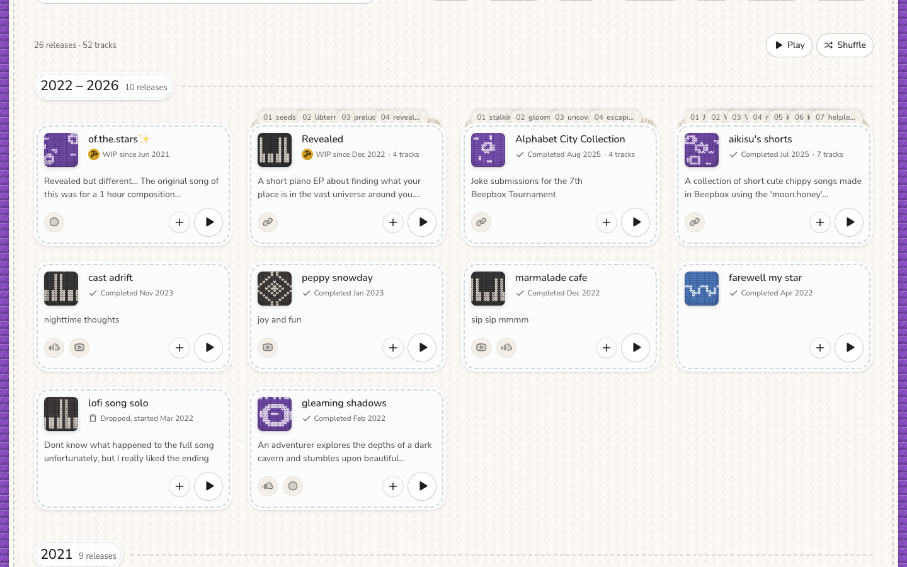
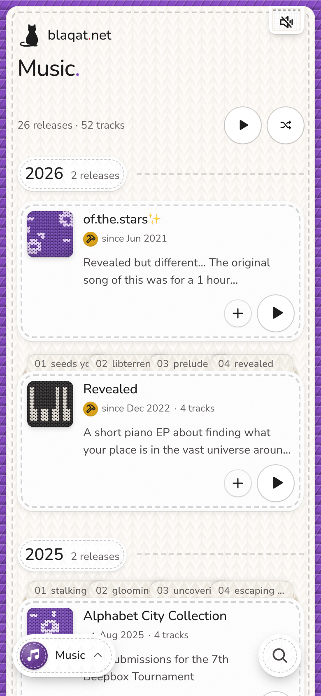

One small type scale
Use a small, consistent type scale … Make card titles smaller than section headings … card text 1px smaller … button text 1px smaller
Every size is a whole pixel on one scale: 12 · 13 · 14 · 15 · 16 · 17 · 22 · 36. Inside a card each role steps down 1px on its own (title 16, body 14, meta 12, buttons 13), and a button is always 1px under the text beside it. Card titles (16) sit under every section heading (22: years, months, Home's blocks, Studio's panes). The 1px steps are why there are more sizes than i10 had on one screen. That's the cost of rules 5 and 6 (see the table).